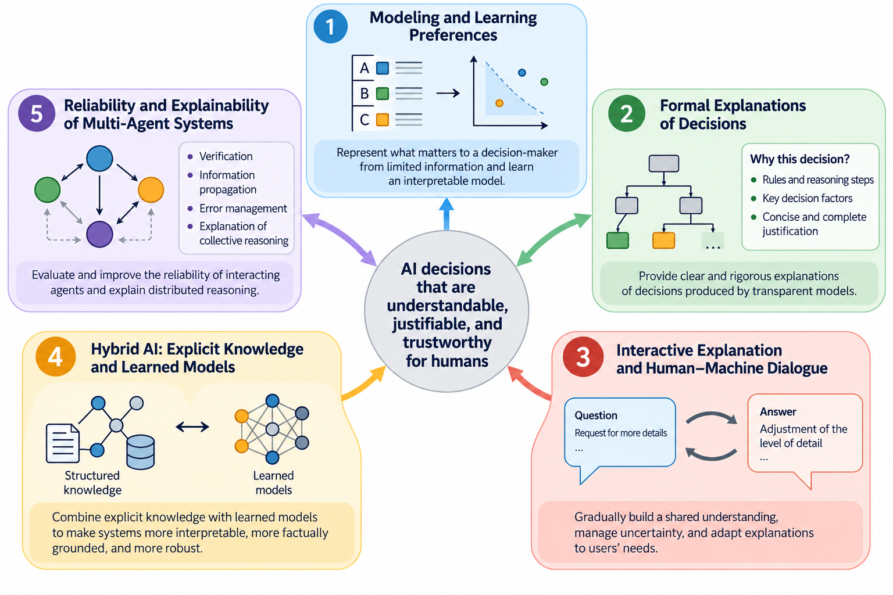

Topics of interest
My research addresses a central question: how can decisions produced by AI systems be made understandable, justifiable and trustworthy for the people who use them or are affected by them? I have developed this question along five research themes, following the evolution of the systems studied: from transparent decision models to learned models, and then to multi-agent systems.

1. Preference modelling, elicitation and learning
Description. My research in this area focuses on the formal representation, elicitation and learning of a decision maker's preferences in multiple criteria decision aiding. It covers sorting models, such as MR-Sort and constrained sorting; reference-point-based models; and preference learning from data, including datasets that only partially satisfy monotonicity assumptions. It also addresses the integration of preference models into optimization problems.
Aim. The objective is to develop preference models that faithfully represent the decision maker's judgments, can be learned from limited or imperfect information, and remain interpretable and computationally tractable. These models provide a formal basis for integrating preferences into decision support and optimization.
PhD theses. This research theme is illustrated by the doctoral work of Manel Maamar, Jinyan Liu, Massinissa Mammeri, Pegdwendé Stéphane Minoungou and Ali Tlili.
2. Formal explanations of decisions from symbolic models
Description. A transparent model does not necessarily produce decisions that users can understand. I study explanation schemes grounded in deductive reasoning, their formal properties—including soundness, completeness and conciseness—and the algorithms required to compute them. Applications cover preference aggregation, optimization systems, including scheduling and assignment problems, and rule-based systems, including possibilistic and fuzzy models capable of generating textual justifications.
Aim. The objective is to provide formal guarantees that explanations are logically justified, sufficiently informative and concise. This work seeks to make the reasoning underlying recommendations, optimization solutions and rule-based decisions accessible to users.
PhD theses. This theme includes the doctoral work of Khaled Belahcène, Manuel Amoussou, Mathieu Lerouge, Francesco Sabatino, Karim El Mernissi and Ismaïl Baaj.
3. Interactive explanation and human–machine dialogue
Description. I approach explanation as an interactive process rather than a one-off output. The system and the user progressively build a shared understanding, address inconsistencies and adapt the level of detail to the user's needs. My research investigates explanatory dialogue protocols, the management of uncertainty in human–machine exchanges, and the interaction between explanation and preference elicitation. Applications include the interpretation of visual scenes and interactive decision support.
Aim. The objective is to develop dialogue-based explanation methods that adapt to users, support the progressive construction of understanding, and help resolve uncertainty or inconsistencies. This theme connects formal explanation methods (theme 2) with preference modelling and elicitation (theme 1).
PhD theses. This theme is illustrated by the doctoral work of Dao Thauvin and Armand Gaudillier.
4. Explainability and hybridization of learned models
Description. This research addresses the interpretability, factual reliability and robustness of learned models, including neural networks and large language models (LLMs). I pursue two complementary approaches: explaining what models have learned, for instance through concept-based explanations for foundation models or representations of dynamic graphs; and combining learned models with explicit knowledge, such as knowledge graphs, conceptual models and rules, to ground and constrain their reasoning. Applications include healthcare, disinformation detection, certification of critical systems and IT system monitoring.
Aim. The objective is to develop AI systems whose predictions and reasoning can be understood, verified and better controlled. Hybrid approaches seek to combine the flexibility of machine learning with the structure, constraints and interpretability provided by explicit knowledge representations.
PhD theses. This theme includes the doctoral work of Reda Arab, Hugo Miccinilli, Baptiste Sivy, William Kim, Charlotte Claye, Géraud Faye and Angélique Yameogo.
5. Reliability and explainability of LLM-based multi-agent systems
Description. This emerging research theme extends explainability and reliability from individual AI models to systems composed of multiple interacting agents powered by large language models. Such systems raise specific challenges, including the propagation of factual errors and adversarial attacks between agents, the assessment of reliability at the collective level, and the explanation of distributed reasoning and agent interactions. The research builds on previous work on factuality, hybrid AI and formal and interactive explanation.
Aim. The objective is to develop methods for assessing, improving and explaining the reliability of LLM-based multi-agent systems. This includes identifying how errors propagate across agents, establishing system-level reliability criteria, and producing explanations that account for the contributions and interactions of individual agents. I am developing this research direction notably within the TMAS research chair.
PhD theses. This theme is currently being developed within the TMAS research chair. The associated doctoral theses can be added once their titles and full names are confirmed.
Common thread
My research follows a coherent trajectory, centred on making decision-making processes and AI systems more understandable, reliable and transparent. I first focused on preference modelling and learning (theme 1), and on the formal explanation of decisions produced by symbolic models (theme 2). I then extended this work to interactive explanation and human–machine dialogue (theme 3), before addressing the explainability and hybridization of learned models through the integration of symbolic knowledge (theme 4). I am now extending these questions to LLM-based multi-agent systems, where reliability and explainability must be addressed at the collective level (theme 5). Throughout this trajectory, interaction remains a cross-cutting dimension, enabling explanations to be adapted to users and understanding to be progressively constructed.